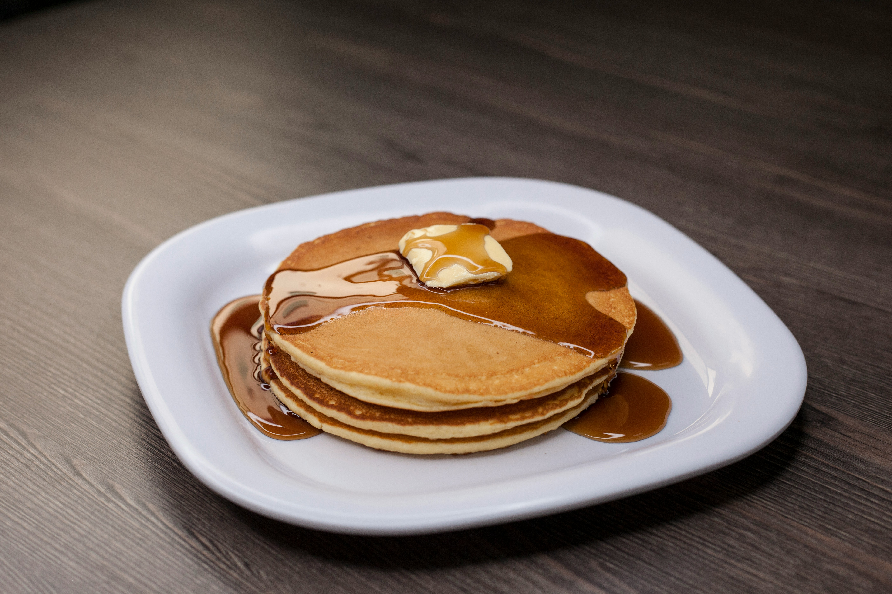

Classic Pancakes

Photo by Edson Saldaña on Unsplash
Soft and Fluffy Breakfast Treat
Pancakes are a popular breakfast dish that are soft, fluffy, and easy to make. They require basic ingredients that are usually available in every kitchen.
They can be served with honey, syrup, fruits, or butter. This recipe is perfect for beginners and takes only about 20 minutes.
Ingredients
- 1 cup all-purpose flour
- 2 tablespoons sugar
- 1 teaspoon baking powder
- 1 cup milk
- 1 egg
- 2 tablespoons melted butter
- Pinch of salt
Steps:
- In a bowl, mix flour, sugar, baking powder, and salt.
- In another bowl, whisk milk, egg, and melted butter.
- Combine wet and dry ingredients to form a smooth batter.
- Heat a pan and lightly grease it.
- Pour batter and cook until bubbles form.
- Flip and cook the other side until golden.
- Serve warm with toppings of your choice.
Home